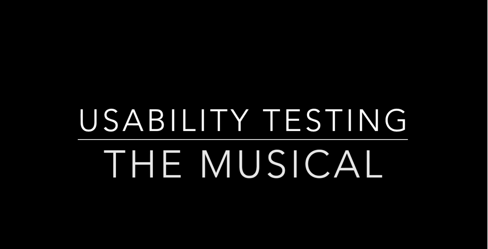

I have 20+ years background in the UX, product management and project management. My particular focus is on creating usable and valuable services and products for the end users. I also have a keen interest in the languages and cultural aspects of the services and products. In addition I have worked with people from dozens of different cultures which have taught me a lot of cultural flexibility.
User Experience and Localization skills:
Project Management skills:
Agile Development skills:
Product Management skills:
Languages
Hobbies and interests
Kasvihuonetuki (Green house subsidy) is a service for the the Finnish farmers. It is used to declare the green houses in the farm and the plants grown in them. The farmers are paid subsidies according to their declaration.
Case KasvihuonetukiAs always I try to keep my design responsive and useful
Sea Calm is a trainer for the box breathing. Box breathing is a good way to achieve calm ready state while under stress. The more you practice the better you can use when you need it
Sea CalmI prefer making prototypes with Invision using either Sketch or Omingraffle for the design
Japanese kanjis were traditionally categorized by 214 radicals, plus their variants, which are common elements the kanjis share. For example 口 (くち) meaning a mouth.
Japanese Radicals BrowserI have been using Photoshop for my Kanji cards and publish them in Twitter with a hashtag #kanjimnemonics
In my opinion the best use for blog writing and other social media is to learn. Learn about languages, learn about tech, learn about history and learn about whatever interests me. When I write about kanjis or robots or any other thing I am interested in I learn a lot about it. I learn to explain what the thing is really about and what it means.
My views on the need for the designers in the age of the thinking machines
Read it!Blogin kirjoittaminen vaatii aikaa ja vaivaa mutta siitä voi olla muutakin hyötyä kuin yleensä ajatellaan
Lue se!Ehkä toiseksi kevyin käytettävyys medtodi johon on aina aikaa
Lue se!Robotti ilman tarkoitusta jää käyttämättä ja niiden käyttöliittymien pitää olla käytettävä
Lue se!Mitä vaatimuksia käytettävyys asettaa kenotodellisuudelle
Lue se!I am quite interested in the Social media and I like learning new things and making contacts
I have made a lot of fun videos with my colleagues. For example these ones
Usability Testing the Musical
Bubbly Yoga Class